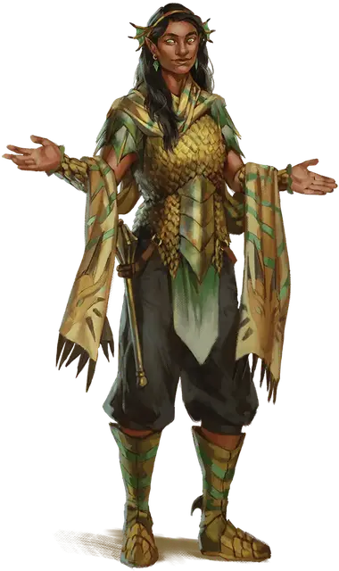

Благословлённый драконом
Dragon Blessed
Средний Гуманоид, любое мировоззрение

Класс Доспеха 14 (чешуйчатый доспех)
Хиты 75 (10к8 + 30)
Скорость 30 футов
| мод | спас | ||
|---|---|---|---|
| СИЛ | 12 | +1 | +1 |
| ЛОВ | 10 | +0 | +0 |
| ТЕЛ | 16 | +3 | +6 |
| мод | спас | ||
|---|---|---|---|
| ИНТ | 14 | +2 | +2 |
| МДР | 17 | +3 | +6 |
| ХАР | 10 | +0 | +0 |
Навыки Медицина +6, Религия +5
Иммунитет к состояниям испуг
Чувства пассивное Восприятие 13
Языки Общий, Драконий
Опасность 5 (1800 опыта)
Бонус мастерства +3
Особенности
Языки. Знает Общий, Драконий и ещё два любых языка.
Действия
Мультиатака. Благословленный совершает две атаки Булавой или Сияющим снарядом.
Булава. . Рукопашная атака оружием: +4 к попаданию, досягаемость 5 фт., одна цель. Попадание: 4 (1к6+1) дробящего урона плюс 18 (4к8) урона излучением.
Использование заклинаний. Благословенный накладывает одно из следующих заклинаний, используя Мудрость в качестве базовой характеристики (Сл спасброска от заклинаний 14):
• Неограниченно: свет [light], чудотворство [thaumaturgy];
• 1/день каждое: улучшение характеристики [enhance ability], небесный огонь [flame strike], множественное лечение ран [mass cure wounds], возрождение [revivify], языки [tongues].
Сияющий снаряд. Дальнобойная атака заклинанием: +6 к попаданию, дистанция 120 фт., одна цель. Попадание: 22 (5к8) урона излучением и благословленный восстанавливает 5 (1к10) хитов.
Описание
Благословенные драконом - прислужники драконов, которых они почитают как богов. Они владеют магией, чтобы исцелять и поддерживать тех, кто заслужил благосклонность их повелителей драконов, и наказывать тех, кто навлекает на себя их гнев. Благословенные драконом рассматривают свою жизнь и магические способности как дары, дарованные им драконом, и они отдадут жизнь, чтобы спасти тех, кого они считают важными для дел своих хозяев
Драконьи последователи. Драконы могут похвастаться множеством приспешников, учеников, наемников, послушников и рабов. Драконьи Последователи - это те слуги, чья преданность дракону приближается к фанатичному почитанию и которые получают взамен от дракона магическую силу.
Драконьи последователи могут служить и почитать любого дракона, и их поведение и убеждения отражают дух дракона, которому они служат. У многих последователей дракона есть личные истории о доброжелательных драконах, которые поделились великими знаниями, защитили их город или спасли их жизни во время какого-нибудь безрассудного приключения. Другие последователи стремятся раскрыть тайны драконьей природы и жить жизнью, достойной награды дракона, и они мечтают о мире, где драконы могли бы жить среди них в качестве их правителей.